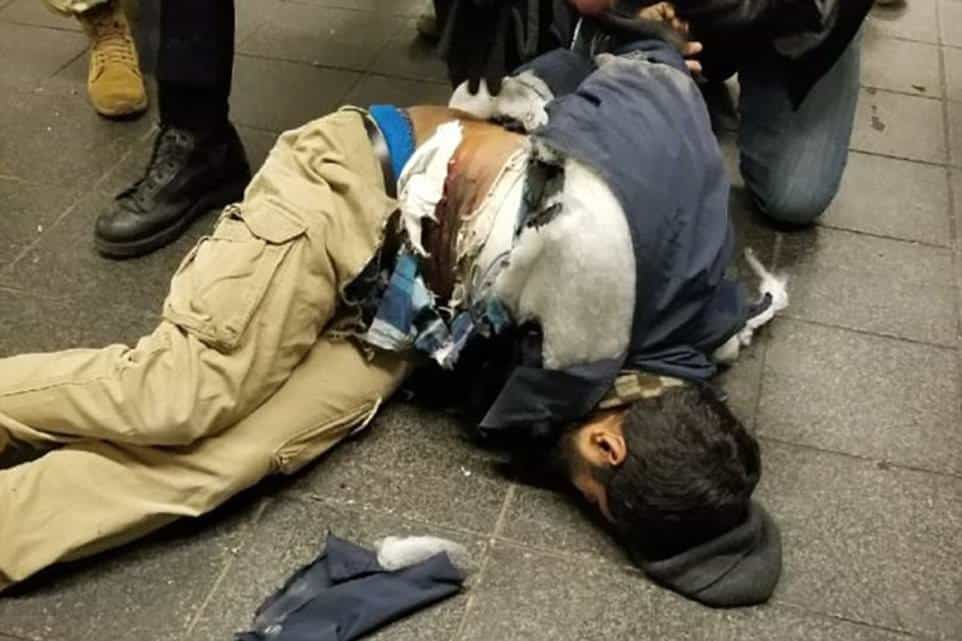

This account syndicates news from other media outlets.


An ISIS-inspired would-be suicide bomber set off a homemade explosive device at the Port Authority Bus Terminal subway station Monday morning, seriously wounding himself and injuring three others, law enforcement sources said.
The man — a 27-year-old Brooklyn man identified by high ranking police sources as Akayed Ullah — had wires attached to him and a 5-inch metal pipe bomb and battery pack strapped to his midsection as he walked through the Manhattan transit hub.
The man partially detonated the device, which he was carrying under the right side of his jacket, prematurely inside the passageway to the A, C and E trains at Eighth Avenue and West 42nd Street around 7:40 a.m., sources said.
Police quickly took the man into custody.
Former NYPD Commissioner Bill Bratton told MSNBC’s “Morning Joe” that the man was inspired by ISIS and possibly born in Bangladesh.
Bratton, who said the man had been living in the US for seven years, “was supposedly setting the device off in the name of ISIS.”
“So, definitely a terrorist attack, definitely intended,” Bratton said.
The man, who suffered the most serious injuries, was taken to Bellevue Hospital.

Three others suffered non-life-threatening injuries, police said. One person was taken to St. Lukes-Roosevelt Hospital, another to Mount Sinai and another person was treated at the scene, officials said.
Investigators briefly spoke to the alleged bomber, who told them he made the explosive device at the electrical company where he works.
Emergency personnel flooded the scene following the incident.
Mayor Bill de Blasio has been briefed on the incident.
The incident sent commuters into a frenzy.
A 911 caller, who would only identify herself as Carmen, told The Post: “I didn’t see anything, I just heard an explosion and I ran out like everyone did to look for the nearest exit.”
“I had like a panic attack, I couldn’t breathe. My stomach started hurting,” the witness said. “I’m doing better — I’m just trying to catch a train to go back home to College Point.”
Designer Chelsea LaSalle tweeted: “holy f–k. just was stuck in a running stampede at port authority bus terminal due to bomb scare. cops EVERYWHERE.”
LaSalle followed up her tweet with another that read: “not a scare. actual explosion moments before i was about to get on the subway.”
Commuter Keith Woodfin tweeted: “I was exiting the Port Authority and the National Guard was running towards something shouting ‘Go, Go, Go.’”
Don’t Miss: The 3 Golden Rules For Getting Laid In New York City